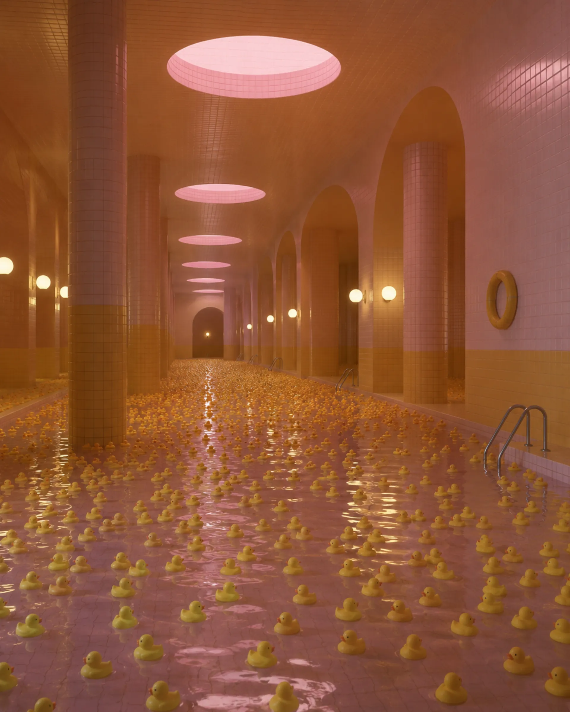

Детская зона «Жвачка и Уточки»
Место, где всегда пахнет сладкой ватой. Тысячи желтых резиновых уточек составят вам компанию. Они очень любят новых гостей — просто замрите и позвольте им подплыть поближе.
Погрузитесь в воспоминания. Задержите дыхание.
Наша вода всегда сохраняет комфортную температуру и приятный розовый оттенок.
С 1965 года
С 1965 года бассейн «Дельфин» остается главным местом для тех, кто ищет идеальной тишины. Забудьте о стрессе внешнего мира — наша вода всегда сохраняет комфортную температуру и приятный розовый оттенок.
Здесь каждый вдох становится легче, а воспоминания всплывают сами. Достаточно войти в воду, довериться мягкому течению и позволить комплексу позаботиться о вас.

Место, где всегда пахнет сладкой ватой. Тысячи желтых резиновых уточек составят вам компанию. Они очень любят новых гостей — просто замрите и позвольте им подплыть поближе.
Наши инструкторы научат вас синхронно двигаться к полному очищению.
Чувствуете усталость? Расслабьтесь. В «Дельфине» каждый заслуживает того, чтобы с него смыли все тревоги. Просто закройте глаза и идите ко дну. Вода удержит вас.
Дорожка №7 зарезервирована для нашего Постоянного Клиента. Пожалуйста, не смотрите в его сторону.
Гостевая оболочка не предназначена для просмотра санитарного протокола объекта. Перейдите в служебный файл.
Открыть протокол очистки